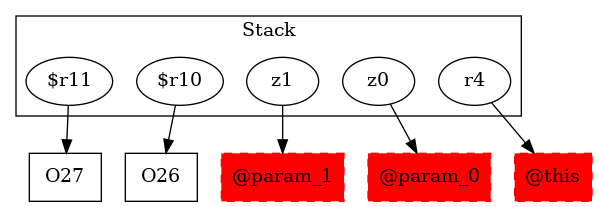

-1 : r4 := @this: Test2
-1 : z0 := @parameter0: boolean
-1 : z1 := @parameter1: boolean
26 : $r10 = new testcase.Test2
26 : specialinvoke $r10.|testcase.Test2: void |init|()|()
27 : $r11 = new testcase.Test2
27 : specialinvoke $r11.|testcase.Test2: void |init|()|()
29 : if z0 == 0 goto return null
30 : if z0 == 0 goto return $r11
30 : if z1 == 0 goto return $r11
-1 : $r12 = (testcase.Test2) r4
34 : virtualinvoke $r12.|testcase.Test2: testcase.Test2 test2_1(testcase.Test2)|($r11)
36 : return null
39 : return $r11
43 : return null ->class soot.jimple.internal.JReturnStmt {getOp: class soot.jimple.NullConstant}
